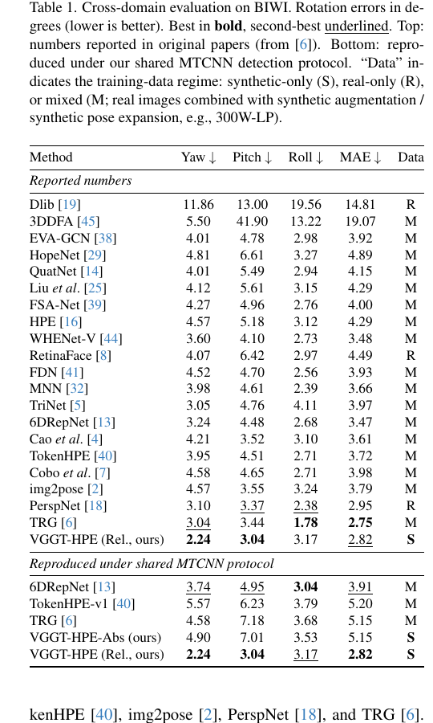
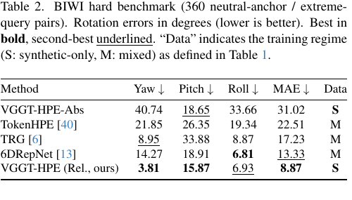
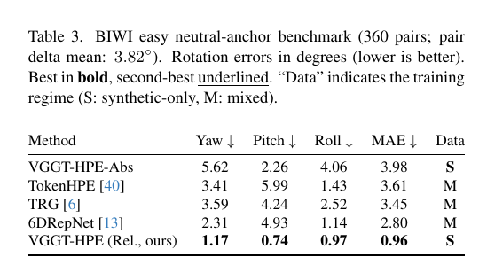
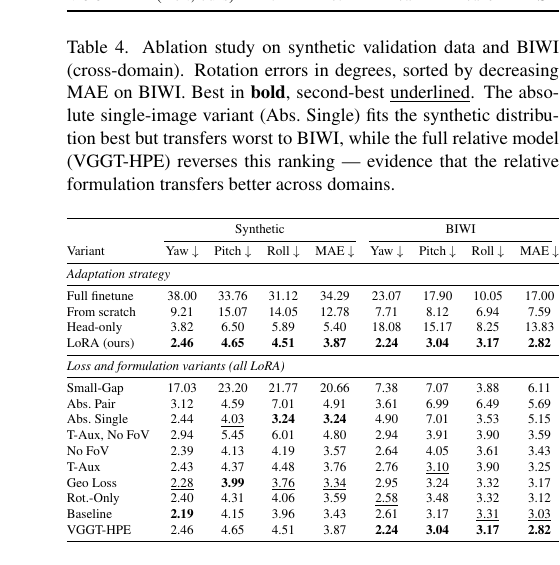
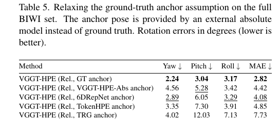
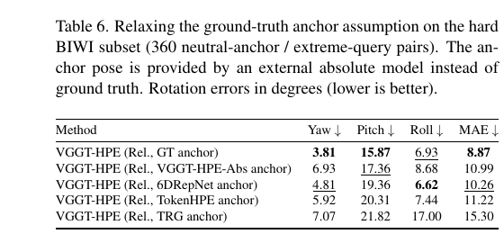

Monocular head pose estimation is traditionally formulated as direct regression from a single image to an absolute pose. This paradigm forces the network to implicitly internalize a dataset-specific canonical reference frame. In this work, we argue that predicting the relative rigid transformation between two observed head configurations is a fundamentally easier and more robust formulation. We introduce VGGT-HPE, a relative head pose estimator built upon a general-purpose geometry foundation model. Fine-tuned exclusively on synthetic facial renderings, our method sidesteps the need for an implicit anchor by reducing the problem to estimating a geometric displacement from an explicitly provided anchor with a known pose. As a practical benefit, the relative formulation also allows the anchor to be chosen at test time — for instance, a near-neutral frame or a temporally adjacent one — so that the prediction difficulty can be controlled by the application. Despite zero real-world training data, VGGT-HPE achieves state- of-the-art results on the BIWI benchmark, outperforming established absolute regression methods trained on mixed and real datasets. Through controlled easy- and hard-pair benchmarks, we also systematically validate our core hypothesis: relative prediction is intrinsically more accurate than absolute regression, with the advantage scaling alongside the difficulty of the target pose. Project page and code: https://vasilikivas.github.io/VGGT-HPE
The dominant paradigm in learned head pose estimation treats the problem as direct regression from a single image to an absolute pose vector — typically three Euler angles (yaw, pitch, roll) and, less commonly, a 3D translation. Methods such as HopeNet [29], 6DRepNet [13], and WHENet [44] train deep networks to map face crops directly to global orientation. This requires the model to internalize a canonical reference frame from the training data - one that is never explicitly provided at test time. More recent works improve robustness through better rotation representations [13], transformer-based modeling [40], or explicit facial geometry [6], but the core formulation remains unchanged. As we show in our experiments, these models tend to degrade for extreme poses, where the implicit anchor - a neutral, frontal configuration baked into the learned weights - lies far from the target.
We argue that relative head pose estimation is a fundamentally easier problem. Predicting the rigid transformation between two observed head configurations sidesteps the need for an implicit canonical frame and reduces the task to estimating a displacement. Because it observes both states, the network can solve this via implicit feature matching—shifting the paradigm from absolute classification to direct image matching. This is simpler and transfers better across domains, since relative geometry does not depend on absolute coordinate conventions or appearance distributions specific to the training set. The relative formulation also introduces a practical degree of freedom that absolute methods lack: the anchor can be chosen at test time. In video, for instance, a temporally close frame with known pose keeps the relative rotation gap small, placing the prediction well within the model’s reliable operating range.
Overview. Our goal is to estimate the pose of a query head image by predicting its rigid transformation relative to an anchor image with known pose. The key intuition is that absolute methods must map a single crop to a pose defined in an implicit canonical frame that is never provided at test time, while the relative formulation turns the problem into image matching between two visible inputs — a task that is geometrically simpler and naturally sidesteps the domain gap. We build on VGGT [33], a geometry foundation model whose camera pose branch already estimates relative rigid transformations between two images, and specialize it to the facial domain via LoRA fine-tuning on synthetic FLAME renderings.

Backbone and Adaptation. VGGT is a feed-forward transformer pretrained on large-scale multi-view data to jointly predict camera parameters, depth, point maps, and correspondences. We retain only the camera branch and disable all other heads. Each camera pose is encoded as p = [t, q, ϕh , ϕw ], where t ∈ R3 is translation, q ∈ R4 is a quaternion rotation, and ϕh , ϕw are the horizontal and vertical fields of view. To adapt VGGT without destroying its pretrained priors, we use LoRA [15]: for each pretrained linear layer W, a low-rank update ΔW = BA is learned while W remains frozen, yielding W′ = W + BA. LoRA modules are inserted into the attention and MLP projections of both the frame-level and global transformer blocks, with rank 8 and scaling factor 16.
Relative Formulation. Given an anchor image Ia with known pose Ta ∈ SE(3) and a query image Iq with unknown pose Tq, the model predicts the relative transformation Tq←a = Tq Ta−1. The absolute query pose is then recovered by composition: T̂q = T̂q←a Ta.
The advantage over absolute regression is twofold. First, absolute methods must map a single crop to a pose defined in a canonical frame that is never provided — it exists only implicitly in the training data. The relative formulation removes this requirement: the model just estimates how much the head moved between two images it can see. Second, by conditioning on a pair of images, the model can perform implicit feature matching between anchor and query, grounding its prediction in visual correspondence rather than memorized pose distributions. This makes the task closer to image matching than to classification, which is both geometrically simpler and naturally robust to domain shift — the relative displacement between two views of a head looks the same whether the images are synthetic or real.
Synthetic Training Data. We generate training pairs using FLAME [24] head meshes rendered in Blender [3], following a pipeline similar to [11]. The dataset comprises 250 identities — 200 with hairstyles from HAAR [30] and 50 bald — each rendered under two HDRI environment maps with ten FLAME expressions and five viewpoints per expression, yielding 25k images. Albedo is sampled from 54 textures covering diverse skin tones. Each pair shares identity and lighting while expression and viewpoint vary freely. At training time, we crop a square face region with random margin and shift, updating intrinsics accordingly, and apply pairwise appearance augmentation (color jitter, gamma, CLAHE, RGB shift, blur, noise) coherently across both views.

Figure 3. Samples from our synthetic training set. Each row shows a single identity rendered under varying viewpoints, expressions, and HDRI environment maps.
In the reported-numbers section, VGGT-HPE (Rel.) achieves the lowest yaw (2.24◦ ) and pitch (3.04◦ ) errors among all methods, and the second-lowest MAE (2.82◦ ), behind only TRG (2.75◦ ), while being the only method trained exclusively on synthetic data. Under the controlled shared protocol, VGGT-HPE (Rel.) achieves the lowest MAE (2.82◦ ) among the baselines.
The key takeaway emerges from comparing our two variants: VGGT-HPE-Abs, which shares the same backbone and synthetic training data but operates in absolute single-image mode, reaches only 5.15◦ , while switching to the relative formulation yields the best result in the table. This confirms that the advantage is structural rather than architectural. Absolute methods must internalize a canonical reference frame from the training data, making them sensitive to domain shift. The relative formulation sidesteps this by predicting a displacement between two explicitly provided views, removing the dependence on an implicit anchor.

Figure 4. Qualitative results on BIWI. Each row shows a different subject. From left to right: the query frame, the anchor frame with its known pose overlay, the ground-truth pose, our prediction (VGGT-HPE), and three baselines (6DRepNet, TokenHPE, TRG). Our method produces pose estimates that are visually closer to the ground truth across a range of head orientations, including challenging near-profile and upward-looking poses where absolute methods exhibit larger deviations.

Figure 5. BIWI neutral-anchor evaluation as a function of anchor-query rotation gap. The upper plot reports rotation MAE, while the lower band shows the number of sampled pairs per bin. VGGT-HPE remains the strongest method across the full range.

Figure 6. BIWI query-pose evaluation as a function of absolute query pose. For VGGT-HPE, each query is paired with a same-subject anchor whose anchor-query geodesic gap is below 5◦ . The upper plot reports rotation MAE, while the lower band shows the number of sampled pairs per bin.
Table 1 presents the main cross-domain evaluation, split into two sections. The top section collects numbers reported in the original publications (following the compilation of [6]); however, these results are not directly comparable, as each method uses its own face detector, crop strategy, and evaluation subset. To enable a fair comparison, the bottom section reproduces all methods under a shared evaluation protocol using MTCNN [42] detection, following the widely adopted setup of 6DRepNet [13]. For TokenHPE, only the v1 checkpoint is publicly available, so we report results with that model. For TRG, we observed that the authors evaluate only on the subset of BIWI frames for which their preprocessing pipeline (based on FAN and MTCNN) successfully detects a face; since this filtering is not documented, we re-ran TRG under our shared protocol for consistency. For VGGT-HPE (Rel.), we use as a fixed anchor throughout each BIWI subject sequence the first frame of each recording, requiring essentially only a single ground-truth pose per subject rather than per-frame annotations.

To study how prediction difficulty scales with the anchor–target rotation gap, we construct two complementary benchmarks from BIWI, each with 360 pairs per subject. In both cases the anchor is near-neutral, so the absolute baselines, which ignore the anchor entirely, are evaluated directly on the target frames. In the hard benchmark these targets are extreme poses; in the easy one they are near-frontal. This lets us study how the different absolute and relative models behave in both easy and hard (extreme) poses.
Hard-pair benchmark. Each pair is formed by selecting a near-neutral anchor frame and an extreme-pose query frame, with a mean anchor–target rotation gap of approximately 70◦ . Results are shown in Table 2. The performance gap between VGGT-HPE (Rel.) and the absolute baselines widens substantially under these conditions: while 6DRepNet, the strongest absolute baseline, achieves 13.33◦ MAE, VGGT-HPE (Rel.) reaches 8.87◦ , a 33% relative improvement. The absolute variant of our model collapses entirely to 31.02◦ , confirming once more that the benefits stem from the relative formulation rather than the backbone.

Easy-pair benchmark. Here the situation is reversed: anchor and target are both near-neutral, with a mean rotation gap of only 3.82◦ . In this regime the absolute baselines are evaluated on their easiest samples — target poses lie close to the implicit canonical frame that these methods internalize during training. Results are shown in Table 3. Even in this favorable setting for absolute methods, VGGT-HPE (Rel.) achieves 0.96◦ MAE, nearly three times better than 6DRepNet (2.80◦ ) and the absolute VGGT variant (3.98◦ ). This result highlights a key practical advantage of the relative formulation: when the anchor–target gap is small, the prediction problem becomes almost trivially easy.

Table 4 presents ablation results on both the synthetic validation set and BIWI. The top section compares adaptation strategies for the VGGT backbone. Full fine-tuning destroys the pretrained representations and performs worst on both datasets. Training from scratch (i.e., without pretrained weights) does better but still lags far behind LoRA on BIWI (7.59◦ vs. 2.82◦ ). Head-only tuning is an interesting case: it achieves reasonable synthetic error (5.40◦ ) but collapses on BIWI (13.83◦ ), suggesting it overfits to the synthetic pose distribution without learning transferable features. LoRA strikes the best balance, preserving the pretrained geometric priors while adapting to the facial domain.
The bottom section ablates loss and formulation variants. The absolute single-image variant achieves the best synthetic MAE (3.24◦ ) but degrades to 5.15◦ on BIWI, while VGGT-HPE reaches 2.82◦ — a clear sign that the relative formulation transfers better across domains. The Small-Gap variant performs worst on both datasets, confirming that sufficient anchor–query displacement is needed during training. Among the loss components, removing field-of-view prediction (No FoV; 3.43◦ ) and translation supervision (T-Aux, No FoV; 3.59◦ ) each hurt cross-domain performance. The geodesic loss and rotation-only variants are competitive, but the full combination in VGGT-HPE yields the best cross-domain result.

A practical limitation of the relative formulation is that it requires a known anchor pose at test time. To understand how sensitive our method is to the anchor pose quality, we replace the ground-truth anchor pose with the prediction of an external absolute model. For each BIWI anchor–query pair, we estimate the anchor pose using one of VGGT-HPE-Abs, 6DRepNet, TokenHPE, or TRG, and use that prediction as the reference for VGGT-HPE (Rel.). The model then predicts the relative transformation with respect to the predicted anchor and composes it to recover an absolute query pose. Since any error in the anchor estimate propagates directly into the composed query pose as a constant offset, this setting is expected to increase the overall error proportionally to the accuracy of the anchor model. Results on the full BIWI set and the hard subset are shown in Tables 5 and 6, respectively.
Performance naturally degrades compared to using the ground-truth anchor, but the drop is moderate when the anchor estimator is reasonably accurate. With a 6DRepNet anchor, for instance, VGGT-HPE (Rel.) reaches 4.08◦ on the full set — worse than with ground truth (2.82◦ ), but still competitive with the absolute baselines in Table 1. On the hard subset the same trend holds: the relative pipeline with a 6DRepNet anchor (10.26◦ ) still outperforms every standalone absolute method except 6DRepNet itself. These results suggest that the ground-truth anchor requirement is not a hard constraint — a reasonable absolute estimator can provide a sufficient reference frame, and the relative formulation remains beneficial even when the anchor is imperfect.


@inproceedings{vasileiou2026vggthpe,
title={VGGT-HPE: Reframing Head Pose Estimation as Relative Pose Prediction},
author={Vasileiou, Vasiliki and Filntisis, Panagiotis P. and Maragos, Petros and Daniilidis, Kostas},
booktitle={CVPR Workshop},
year={2026}
}